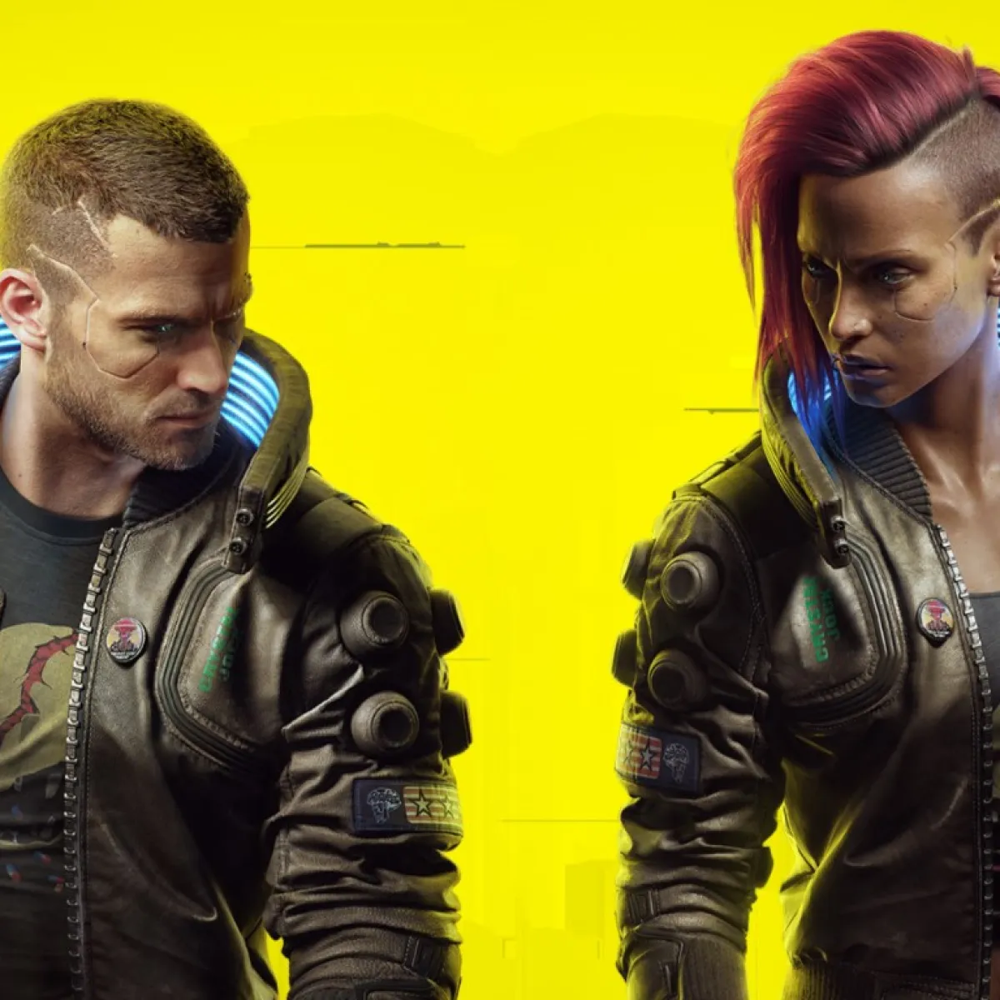
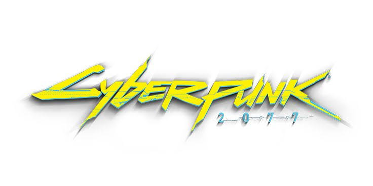

Il gioco inizia con la selezione di uno dei tre percorsi di vita per il personaggio V controllato dal giocatore: Nomade, Vita da strada o Corporativo. Tutti e tre i percorsi coinvolgono V che inizia una nuova vita a Night City con il delinquente locale Jackie Welles (Jason Hightower) e la netrunner T-Bug.
Nel 2077, il fixer locale Dexter DeShawn (Michael-Leon Wooley) assume V e Welles per rubare un biochip noto come "il relic" dalla Arasaka Corporation. Dopo esserne entrati in possesso, il piano va storto quando assistono all'omicidio del leader della megacorp Saburo Arasaka (Masane Tsukayama) per mano del figlio traditore Yorinobu (Hideo Kimura). Yorinobu insabbia l'omicidio come un avvelenamento ed avvia un intervento della sicurezza dove T-Bug verrà uccisa dai netrunner dell'Arasaka. V e Welles fuggono, ma Jackie viene ferito a morte e la custodia protettiva del Chip viene danneggiata, costringendo V a inserire il biochip nel cyberware della sua testa.
DeShawn, furioso per l'attenzione indesiderata della polizia, spara a V in testa e lo lascia in una discarica, sicuro dell'omicidio. Ma al suo risveglio, V è perseguitato dal fantasma digitale del veterano di guerra diventato un'iconica rock star: Johnny Silverhand (Keanu Reeves), morto nel 2023 durante un tentativo di attacco termonucleare alla Torre Arasaka. V apprende dal suo bisturi, Viktor Vector (Michael Gregory), che il proiettile di DeShawn ha innescato il relic, facendo riaffiorare la personalità di Silverhand. In poche settimane, i ricordi di Johnny sovrascriveranno irreversibilmente quelli di V, prendendo definitivamente il controllo del suo corpo. Il biochip non può essere rimosso, quindi V deve cercare un modo per estrarre il relic senza morire.
Rivivendo i ricordi di Silverhand, V apprende che nel 2013, l'allora fidanzata di Johnny, Alt Cunningham (Alix Wilton Regan) aveva creato il Soulkiller, un'intelligenza artificiale in grado di copiare le menti dei netrunner attraverso i loro collegamenti neurali. Tuttavia, il processo distrugge il cervello del bersaglio. L'Arasaka rapì Cunningham e la costrinse a creare la propria versione del Soulkiller, che avrebbe immagazzinato le menti dei suoi bersagli in una fortezza digitale della mega-corporazione chiamata Mikoshi. Silverhand condusse una missione di salvataggio per recuperare Cunningham ma al suo arrivo l'Arasaka aveva già utilizzato il Soulkiller. Johnny cercò vendetta, ma l'Arasaka lo catturò e usò il Soulkiller anche su di lui.
Nel 2077, l'Arasaka stava pubblicizzando un programma: "Secure Your Soul" e conducendo ricerche segrete sulla scrittura di una copia digitale di una mente in un cervello umano vivente, da cui è nato il Relic. Alla fine, V dovrà decidere se sferrare un attacco alla Torre Arasaka, per ottenere l'accesso fisico al Mikoshi e usare il Soulkiller per rimuovere Silverhand dal suo corpo.
A seconda delle azioni del giocatore durante la partita, V potrà scegliere tra diverse opzioni per condurre l'attacco. Potrà decidere diversi finali: Suicidarsi; Consentire a Silverhand di organizzare l'attacco con il suo ex equipaggio; Organizzare l'attacco con una rete di alleati riuniti durante la partita; Organizzare l'attacco da solo. Indipendentemente da ciò, dopo aver usato con successo il Soulkiller, si scopre che il danno al suo corpo è irreversibile dato che le cellule nervose di Johnny si sono diffuse troppo e il sistema immunitario organico di V, una volta rimosso il costrutto, attaccherebbe il suo stesso cervello uccidendolo in pochi mesi. A seconda della scelta del giocatore, V rimarrà nel suo corpo con un'aspettativa di vita incerta oppure consentirà a Silverhand di subentrare in modo permanente, in qual caso renderà omaggio ai suoi amici, lasciando Night City per iniziare una nuova vita.
torna all'ambientazione. \ clicca il logo per tornare all'inizio 